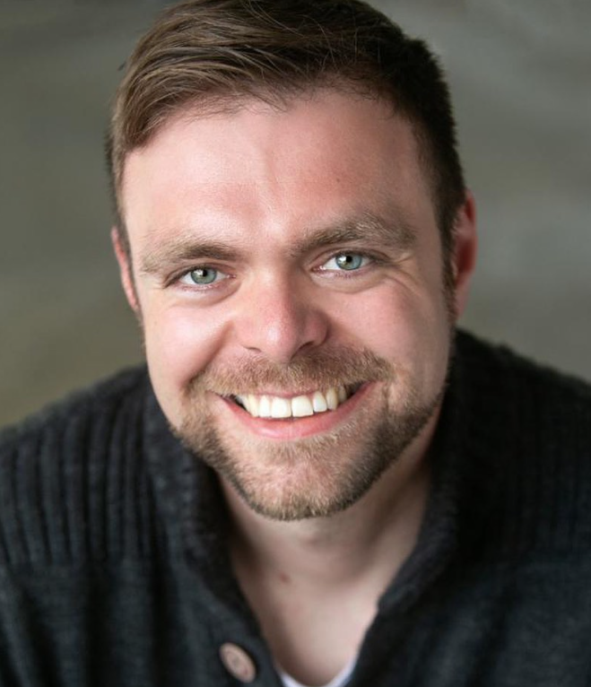
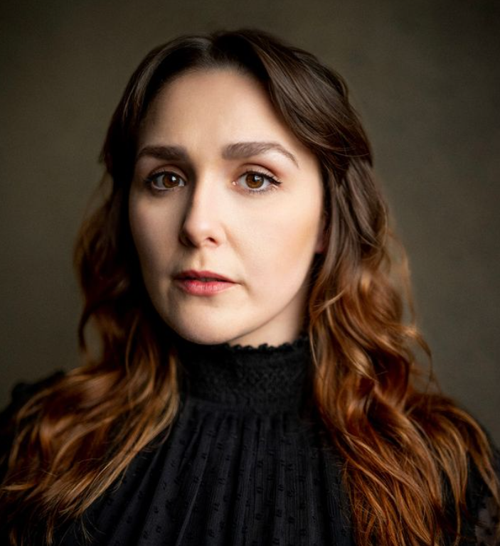
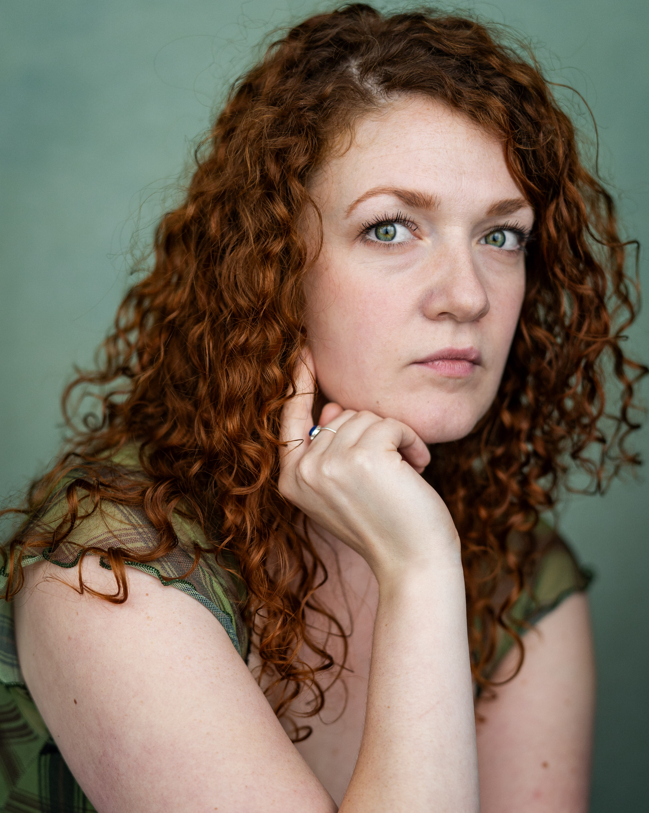

Meet Us
Nicholas Benjamin
Nicholas graduated from the University of Exeter in 2012 and has since launched into a varied stage and screen career. Dracula marks Nicholas' return to directing, after a four year break. Directing credits include Lost Words: The Tale of Edgar Allan Poe, The Picture of Dorian Gray and The Glass Trilogy.
As an actor Nicholas specialises in comedy and in 2018 won the Film Oxford Best Actor Award for his role in the short comedy film Riff.
Film/TV Credits include: Mafia’s Greatest Hits (Discovery Channel), The Real Story (History Channel), When Cosmetic Surgery Goes Horribly Wrong (Channel 5), We Go in at Dawn (Picture Perfect Films), Three Dots and a Dash (Wordsmith Entertainment), The Piggies (SubAlley Productions) and Saint Soldier (GandG Multimedia).
Nadia Lamin

Niamh Handley-Vaughan
Niamh trained at Bath Spa University and attained a Performing Arts BA (Hons). Past theatre productions have included an open air touring production of Much Ado About Nothing, A Midsummer Night's Dream and Bunny by Jack Thorne. She has also performed in various musicals, short films and web-series, and been involved with productions at theatres such as The Arcola Theatre, The Tabbard and The Egg theatre Bath. Her first taste of immersive theatre was at the Bierkeller in Bristol in which she performed in part of a David Lynch dreamscape called Divine Nights.